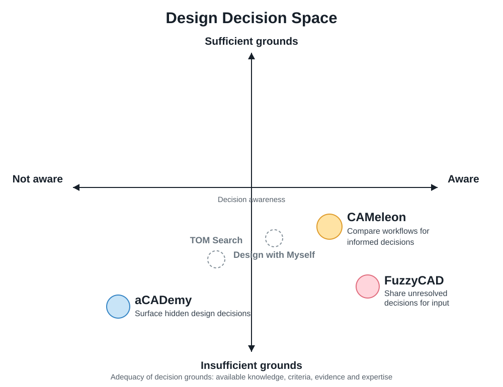

Design problems evolve
Rittel & Webber (1973) and Dorst & Cross (2001) motivate examining how problem formulations and possible solutions change together.
Research agenda · Work in exploration
I study how people recognize and reason through consequential design decisions as goals, constraints, and available knowledge evolve. My current setting is CAD, where design choices become embedded in geometry and fabrication plans.
01 · Introduction
Design is a wicked problem. Goals, constraints, and possible solutions evolve together, so designers cannot fully plan their work in advance. CAD automation often focuses on efficiently moving from a design goal to a final artifact. My research focuses on what happens in between: how designers recognize consequential decisions, reason through trade-offs, and learn as a design takes shape. I investigate how CAD tools can support this ongoing reasoning.
02 · Background and research framework
Decision awareness asks whether someone recognizes that a decision needs attention. Ability to resolve asks whether they have sufficient knowledge and resources to reason through that decision.

Rittel & Webber (1973) and Dorst & Cross (2001) motivate examining how problem formulations and possible solutions change together.
Ball & Christensen (2019) provide a lens on metacognition; Star & Griesemer (1989) inform questions about working across different perspectives.
Problem–solution co-evolution · Dorst & Cross (2001) — Problems and solutions develop together.
Situated FBS · Gero & Kannengiesser (2004) — Design changes through interactions among environments and interpretations.
Co-evolution and emergence · Dorst (2019) — Exploring solutions can reframe the problem.
Expansive learning for collaborative design · Tessier (2022) — Collective challenges support learning.
Learning on demand · Fischer (1996) — Situates learning within design tasks.
Wicked problems · Rittel & Webber (1973) — Problem formulation changes during solution efforts.
Co-evolution formalised · Maher et al. (1996) — A computational problem–solution model.
Design problem spaces · Goel & Pirolli (1992) — Shared features of designing across disciplines.
C-K design theory · Hatchuel & Weil (2009) — Expansion between concepts and knowledge.
Cognitive artifacts of designing · Visser (2006) — Designing as constructing representations.
Designerly ways of knowing · Cross (2006) — Distinct ways of acquiring design knowledge.
03 · Research questions
Each situation opens different opportunities for individual reasoning and collaborative reasoning.
Not aware · Can resolve
A designer or team has relevant expertise but has not noticed a decision that needs attention.
Situated invention · Suwa et al. (2000) — Unexpected features noticed in sketches can contribute to new design issues and requirements.
Kinds of seeing · Schön & Wiggins (1992) — Designers perceive and judge visual and spatial qualities while reasoning through changes.
Design fixation · Crilly (2015) — Professional designers can become constrained by existing solutions.
Visual re-cognition · Oxman (2002) — Reinterpretation can make new forms and meanings emerge.
Opportunistic design · Guindon (1990) — Requirements and partial solutions prompt changes in level of abstraction.
Visual representations as epistemic objects · Ewenstein & Whyte (2009) — Incomplete representations supported inquiry.
Design fixation · Jansson & Smith (1991) — Designers reproduced flawed features of example solutions.
Reflection-in-action · Schön (1983) — Surprises can prompt reframing during action.
Seeing-as and seeing-that · Goldschmidt (1991) — Sketching supports interpretation and description.
Perception in design sketches · Suwa & Tversky (1997) — Architects and students attended to different relationships.
Expertise in design · Cross (2004) — Expertise shapes problem framing.
Ambiguity as a resource · Gaver, Beaver & Benford (2003) — Ambiguity encourages interpretation.
Aware · Can resolve
The decision is recognized and relevant knowledge is available, but alternatives, criteria, and earlier judgments may still need examination.
Design rationale / QOC · MacLean et al. (1991) — Questions, options, and criteria structure discussion of design alternatives.
Prior knowledge in design · Oxman (1990) — Designers adapt and reformulate precedents.
Constructive memory · Liew & Gero (2004) — Past experience is reconstructed for current design situations.
Design stories · Oxman (1994) — Links issues, concepts, and forms.
Primary generator · Darke (1979) — An initial guiding idea helps organize development.
Analogical reasoning and mental simulation · Ball & Christensen (2009) — Strategies used under uncertainty.
Briefing and reframing · Paton & Dorst (2011) — Experienced designers reinterpret a problem.
Parallel prototyping · Dow et al. (2010) — Supports divergent exploration and evaluation.
Subjunctive interfaces · Lunzer & Hornbæk (2008) — Alternatives can be compared side by side.
Side views · Terry & Mynatt (2002) — Preview commands before committing.
Variation in element and action · Terry et al. (2004) — Supports simultaneous alternatives.
Design as exploration · Hartmann et al. (2008) — Parallel authoring and tuning.
gIBIS · Conklin & Begeman (1988) — Captures issues, positions, and arguments.
Satisficing · Simon (1996) — Designers can select adequate solutions.
Abduction in design · Dorst (2011) — Links working principles and intended outcomes.
DesignMemo · Li et al. (2025) — Links conversation context with visual design history; directly relevant prior work for RQ08.
Not aware · Cannot resolve
A consequential issue is not yet recognized, and relevant knowledge or expertise is missing.
Design knowledge needs · Ahmed & Wallace (2004) — Novices may not explicitly recognize their knowledge needs.
Design metacognition · Ball & Christensen (2019) — Uncertainty shapes monitoring and regulation of design thinking.
Design risks framework · Carlson et al. (2020) — Attention and risk recognition.
Embedded design critics · Fischer et al. (1993) — Context-sensitive critique prompts reflection.
Knowing what is not known · Miyake & Norman (1979) — Question-asking depends on prior knowledge.
Metacognition · Flavell (1979) — Monitoring understanding.
Paradox of the active user · Carroll & Rosson (1987) — Users may act rather than consult instructions.
The role of critiquing · Fischer et al. (1991) — Presents knowledge when relevant.
Preparation for future learning · Schwartz & Martin (2004) — Trying problems can prepare learners to benefit from instruction.
Aware · Cannot resolve
The decision is recognized, but the designer or team still needs knowledge, evidence, or contributions from others.
Symmetry of ignorance · Fischer (2000) — Complex design knowledge is distributed across people.
Boundary objects · Star & Griesemer (1989) — Shared objects accommodate differing viewpoints.
Boundary negotiating artifacts · Lee (2007) — Artifacts help shape collaborative practices.
Knowledge boundaries · Carlile (2004) — Transferring, translating, and transforming knowledge.
Collaborative reframing · Stompff et al. (2016) — Surprises can prompt joint sensemaking.
Disciplinary difference and uncertainty · Dyer et al. (2021) — Disciplines value uncertainty differently.
Micro-conflicts and uncertainty · Paletz et al. (2017) — Disagreements can change uncertainty.
Delaying decisions · Ward et al. (1995) — Options can remain open and be narrowed progressively.
Object worlds · Bucciarelli (1994) — Engineering disciplines negotiate across perspectives.
Visual representations in engineering · Henderson (1999) — CAD and drawings shape collaboration.
Shared understanding in co-design · Kleinsmann & Valkenburg (2008) — Barriers to shared understanding.
Teamwork and social processes · Cross & Cross (1995) — Team coordination and disagreement.
Situated learning · Lave & Wenger (1991) — Learning through participation.
Awareness and ability are not fixed stages. A decision may change for one designer over time and may be understood differently across collaborators. These questions connect the four situations.
RQ17How might CAD tools adapt their support as a decision shifts from unnoticed to unresolved or ready for commitment?
RQ18How might CAD tools direct unresolved decisions to collaborators with complementary expertise without losing design context?
RQ19How might support for fabrication decisions in one CAD task help designers reason independently in later tasks?
RQ20How might AI-assisted CAD adapt reflective guidance to designers' evolving understanding while preserving decision ownership?
04 · Research to date
My research develops interactive tools for design reasoning in CAD.
Published research
Comparing fabrication workflows in CAD to support design reasoning. The published study examines an interface for exploring alternative fabrication workflows and considering their trade-offs.
Research in progress
Research in progress
05 · Future research
These questions motivate research on learning over time, coordination across expertise, and how forms of reasoning support vary beyond CAD.
Research opportunity. Different roles and tasks already motivate different interfaces, yet they often work on the same underlying design. What if a single shared model could support several interfaces that adapt to the reasoning required at a particular moment? The contribution to investigate is not merely generating a different layout. It is matching interaction mechanisms to changing decision needs while preserving continuity across views and collaborators.
Shared representation. A possible system would maintain one underlying design model and data structure for geometry, constraints, open decisions, alternatives, rationale, evidence, and provenance. Different interfaces would read and update the same decision objects, rather than creating disconnected copies. A designer might explore alternatives, an engineer inspect loads and constraints, and a physical therapist review fit and movement using distinct views of the same model. A single designer might also move between discovery, comparison, learning, and review as a decision evolves.
Adaptation mechanism. The Awareness × Ability framework suggests possible triggers: surface an overlooked decision, expose comparison tools when a known decision needs evaluation, provide situated learning when knowledge is missing, or support handoff when input must come from another expert. These states would be hypotheses, not presumed reliable inferences. Interfaces should explain why a view is suggested and allow users to switch, dismiss, or override it. Changes must preserve geometry references, selection, decision history, and unresolved questions.
Open research questions. What signals can distinguish a change in reasoning need from ordinary UI activity? What should adapt: information, available operations, interaction modality, or level of guidance? How can users move between specialized interfaces without losing context or decision ownership? How can collaborators retain a shared understanding when they see different representations of the same underlying model?
Possible first study. Prototype two or three interchangeable views backed by one model and decision schema. Compare a fixed interface, manually selected role/task views, and context-sensitive suggestions during a multi-stage CAD task or multidisciplinary handoff. Examine decision recognition, reasoning quality, information lost during transitions, handoff accuracy, interruption costs, and perceived control. This is a future research proposal, not an implemented system or an established finding.
Which decision challenges transfer to other design practices, and which require domain-specific tools and expertise?